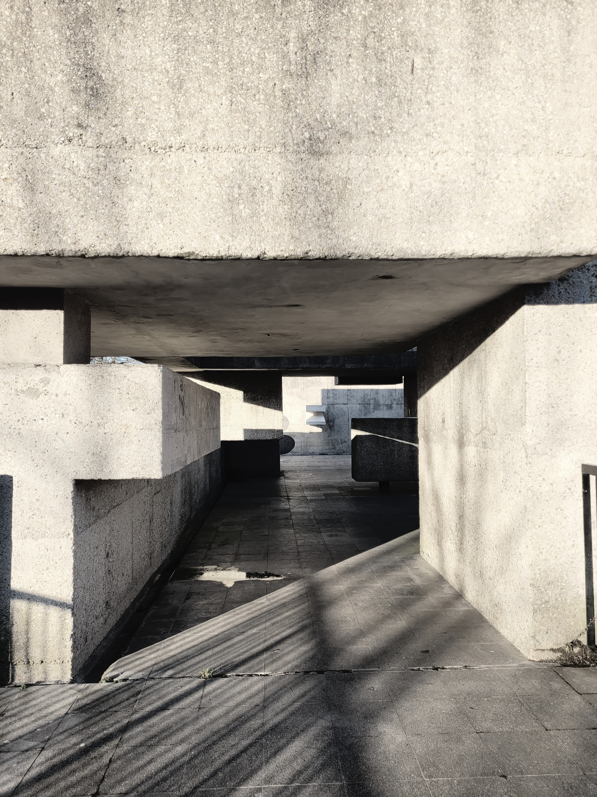
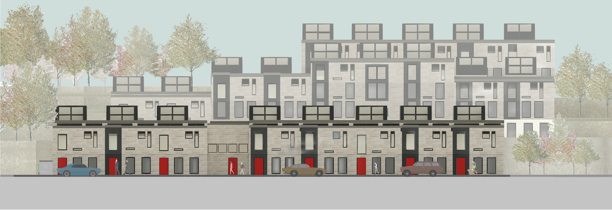
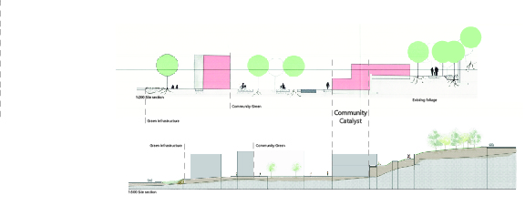
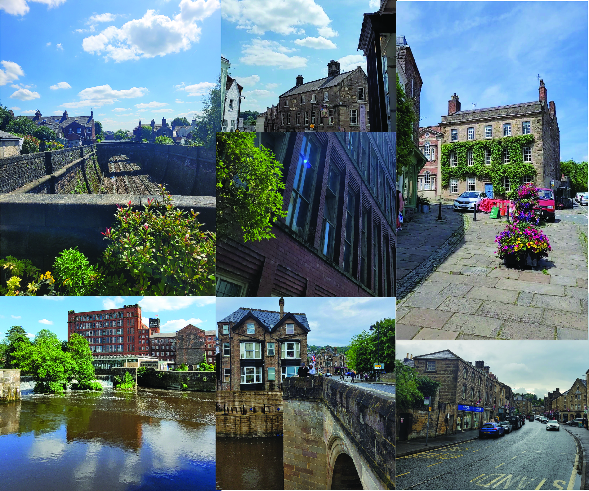
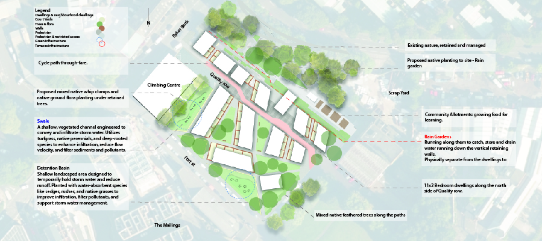

Selected work
Scroll through the portfolio. Select any image to open the full project.

Apollo Countryside Café
Countryside Café

Co-Living, Byker Conygar Quarry
Conygar Quarry
 Art Museum, Nantes
Art Museum, Nantes

Relational Mapping Urban Co-Living
Urban Co-Living

Derbyshire Climbing Centre
Climbing Centre
 House of the Future
House of the Future
 Community Housing
Community Housing
 Façade Study
Façade Study
 Urban Mapping
Urban Mapping
 Quarry Elevation
Quarry Elevation
 Shared City
Shared City

Spatial Relationships Material & Light
Material & Light